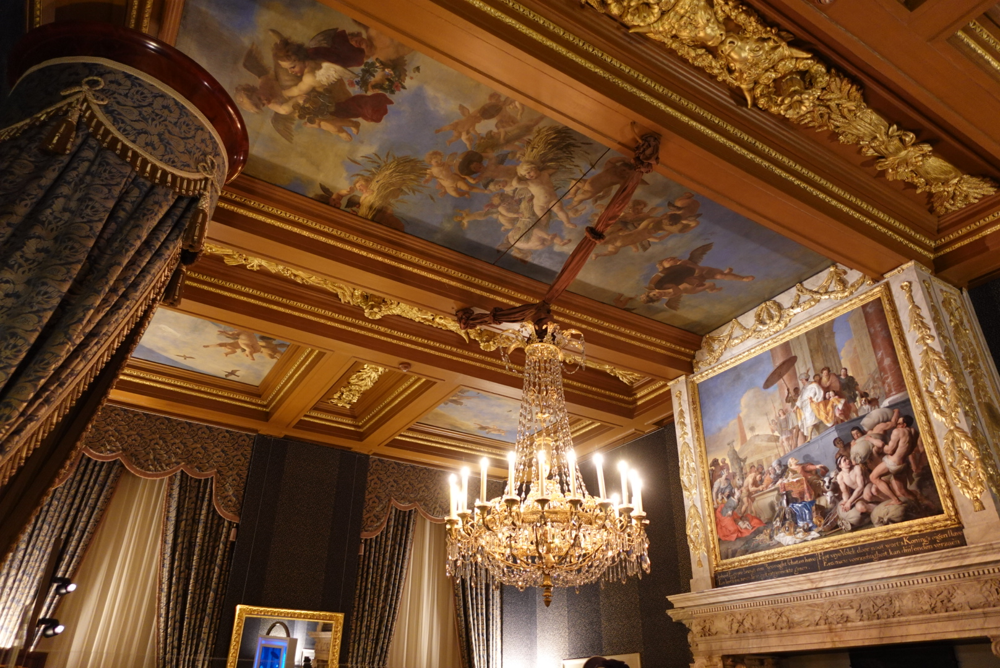
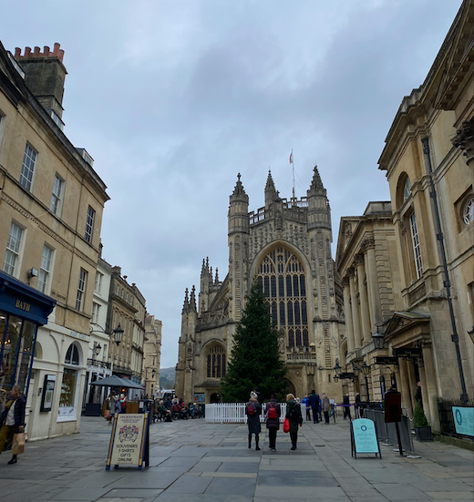

My miniature blog!
Favorite places I've travelled:
I absolutely love to travel and immerse myself into new cultures. I have been lucky enough to explore some beautiful countries recently, so here are a few of my travel highlights from recent years.
Amsterdam

Credits to my sister and best travel buddy, my sister, for her film camera which provided this beautiful shot in the city center.

Some more canals!
We went on a few tours throughout the visit, but my favorite was an audio guided tour of the Royal Palace. The interior was gorgeous... from paintings, to sculptures, to the story behind all of the artwork... I was star-struck to say the least.
London
caption

caption
Turkey
caption
Media I highly reccommend
Whenever I'm in need of comic-relief from school, I'll either opt for 'Smartless' or 'Armchair Expert'... I could walk for hours listening to comedians interview celebrities.

As a long-distance runner, the Peter Attia Drive has been an extremely informative source that has taught me so much about training and fueling for longetivity!

'The Moth' provides audiences with such a wide variety of stories... comedic, inspiring, tear-jerking... they have it all. And I enjoy every second of it.